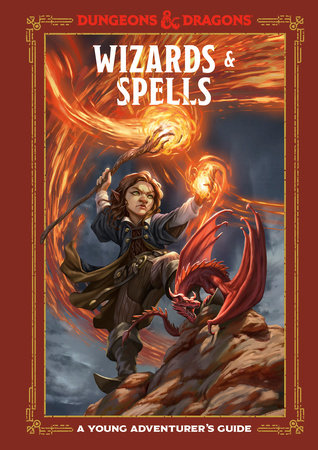
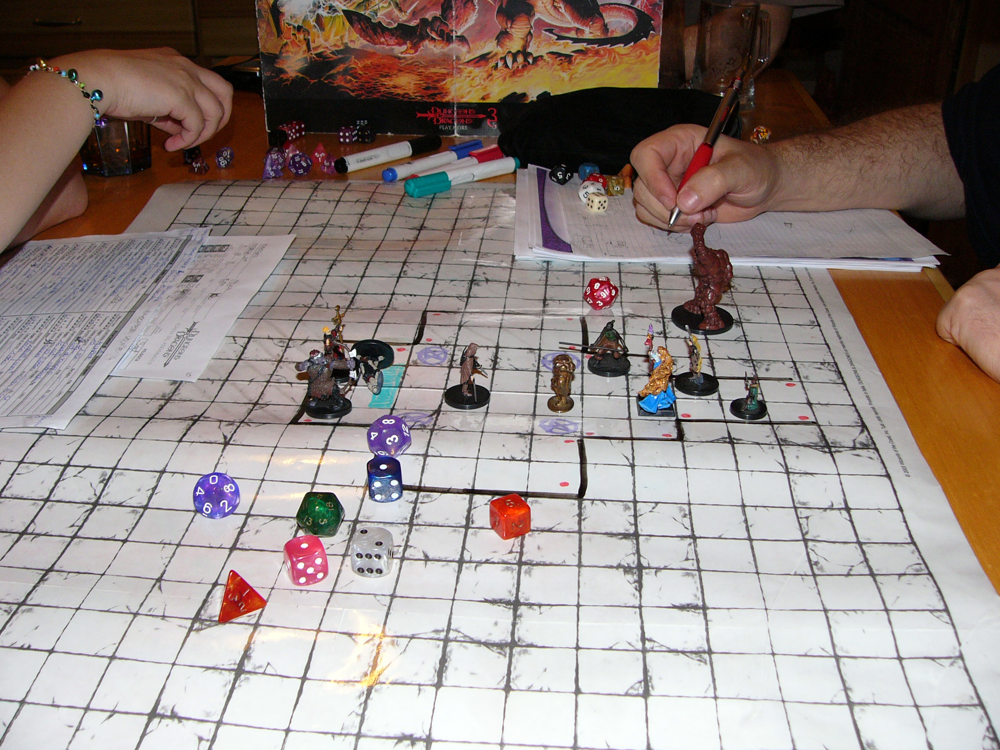

Здесь вы узнаете многое о игре Dungeons and Dragons, со временем здесь появятся другие сюжеты которых нету в самой игре.


О игре
Есть сама игра, но для неё можно купить:Ширма мастера,Книгу игрока и еще некотрые дополнение, которые расширяют границы этой игры.
В самом начале этой игры есть один не быстрый сценарий. Но можно писать сценарии самому. Я написал свой сценарий по тематике Властелин колец по гайду.
Вот видео для адаптации существ.